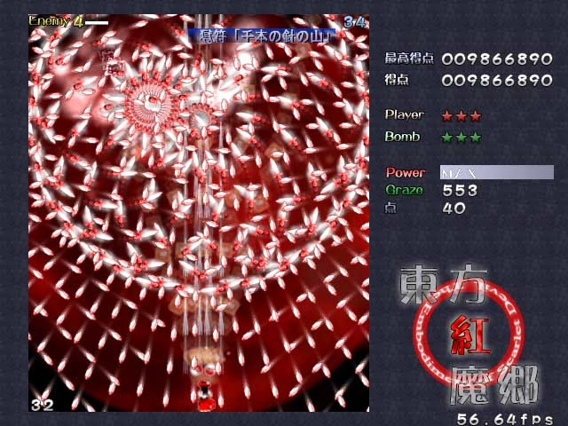
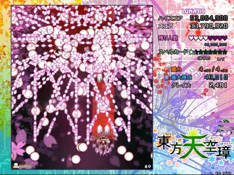
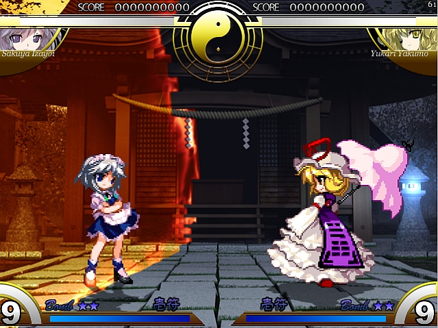
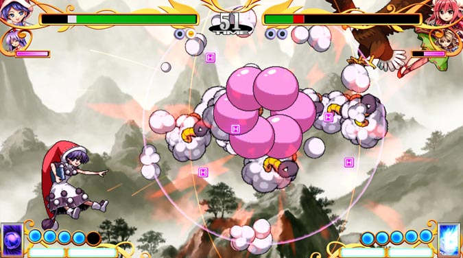

Touhou Project, conocido también como Tōhō Project o Project Shrine Maiden, es una serie de juegos shoot 'em up creada por Team Shanghai Alice.
Normalmente los juegos oficiales tienen la temática danmaku, es decir, un shoot em' up vertical en 2D, con la diferencia de que la dificultad suele ser mucho mayor al haber una gran cantidad de balas, lo que le ha ganado una gran popularidad tanto en tierras niponas como internacionalmente, a pesar de que la saga no recibe traducciones oficiales a otros idiomas.
La serie de juegos se ambienta en Gensokyo, una región ficticia de Japón separada del resto del mundo por la Barrera Hakurei. Una de las muchas razones de la popularidad de Touhou radica en su gran variedad de personajes (en su enorme mayoría de género femenino), basados en distintas criaturas del folclore japonés conocidas como yōkai.El modo de jugar es disparar a los enemigos a la vez que se esquivan sus balas, tratanto de recolectar los objetos que dejan, que suben desde el puntaje, hasta el poder de disparo y habilidades al personaje, dependiendo de la entrega de la serie. Normalmente, el jugador también cuenta con bombas llamadas "Cartas de Hechizo" (Spell Cards) las cuales son un ataque devastador del personaje jugable que suele abarcar toda la pantalla y fulminar todo a su paso, sin embargo, más allá de que son limitadas, poseen la desventaja de anular nuestro bonus de Spell Card al ser utilizada durante una bomba de un jefe o sub-jefe.
Otra característica de la serie de juegos de Touhou, son las diferentes historias dependiendo del personaje que se escoja y sobre todo los finales que el jugador puede desbloquear, ya que de agotarse las vidas del jugador y en cambio utilizar al menos un Continue en el modo Normal en adelante será imposible desbloquear el Nivel Extra.
Algo también novedoso y ya particular de esta saga de juegos es el llamado "Nivel Extra" habiendo usualmente un escenario nuevo y único (dos en el Touhou 07 - Perfect Cherry Blosssom) para combatir o jugar en el que las condiciones son, que el jugador posee hasta 2 vidas, iniciando de 0 su poder de fuego y sin Continues, la dificultad suele ser del nivel Lunático y es esencial para complementar la historia, además de encontrar al final del escenario con un personaje que funje como el jefe de dicho escenario, desconocido hasta ese momento, ya que no aparece en el modo normal de juego, pero que va enlazado a la historia.
Una característica más son sus modos de juego desde el nivel Fácil, pasando por el modo de juego Normal, siguiendo el modo Dificil y finalmente lo que ha ayudado también en la fama de Touhou: el monstruoso modo Lunático siendo estas sus características:
Modo Fácil: Los enemigos tienen poca velocidad tanto de movimiento como de disparo y en cuanto a sus ataques, suelen ser pocos y pobres, eso incluye a los jefes y sub-jefes. La puntuacion obtenida suele ser la menor y la restricción es no poder disfrutar del Nivel Extra.
Modo Normal: Los enemigos se mueven un poco más rápido que en el modo Fácil, las cajas suelen habitar un poco mas y los jefes suelen mostrar lo que vendría a ser su poder normal o su nivel normal en cuanto a la historia. De completar el juego sin usar Continues es posible jugar el Nivel Extra.
Modo Difícil: Un modo para los jugadores más avanzados, la velocidad y puntería de los enemigos y los jefes es bastante buena y acertada, de no utilizar Continues se puede desbloquear el Nivel Extra y obtener una buena puntuación.
Modo Lunático: El modo de juego para los más experimentados, temerarios y los que deseen experimentar el horror en este juego. La velocidad de los enemigos es demasiado alta, la dificultad de los jefes e incluso de los sub-jefes es demasiado alta, mostrando su poder en todo su esplendor, de no usar Continues, se desbloquea el Nivel Extra y se obtiene una gran puntuación dependiendo de tu desempeño.
Desarrollo
Todos los juegos oficiales de Touhou Project fueron producidos completamente por el programador de juegos japonésJun'ya Ōta, alias ZUN, quien hizo todos los gráficos, música y programación solo.12
Originalmente ZUN producía los juegos como parte del grupo universitario Amusement Makers, todos los juegos en ese entonces fueron producidos para la NEC PC-9801. Posteriormente, después de dejar la universidad y con ello Amusement Makers, ZUN formó su propia empresa: Team Shanghai Alice; la cual se dedicaría exclusivamente a productos de Touhou y que tendría a sólo un integrante: él mismo. Todos los juegos publicados por Team Shangai Alice han sido para la familia Microsoft Windows.
Jugabilidad
Juegos bullet hell
El poder de las balas de jugador se incrementa de forma lineal a medida que el jugador consigue power-ups (representados por iconos rojos con una P) dejados por los enemigos, y eventualmente llega al máximo. El jugador también puede conseguir iconos de puntos para ganar más vidas; el número necesitado crece exponencialmente a medida que el jugador gana vidas.
El jugador puede utilizar focus (enfoque, la tecla ⇧ Mayús por defecto), que reduce la velocidad del jugador, hace visible el área de colisión y cambia el modo de disparo, normalmente enfocando todas las balas del jugador. En Touhou 8 ~ Imperishable Night este modo, además, hace un cambio por el segundo personaje (el personaje phantom). Esta función es esencial para navegar por patrones de ataque complejos y derrotar a las jefes más rápido. Un contador llamado Graze, muestra cuántas balas pasaron más cerca del personaje sin tocar el área de colisión, y recompensa al jugador con un bono de puntuación por cada uno.
El jugador puede utilizar un arma llamada Spell Card (carta de hechizo, la tecla X por defecto) cuyo número es limitado; tal arma es muy similar a la bomba de otros juegos del género. Utilizando una carta de hechizo hace que el personaje sea temporalmente invulnerable y utiliza un ataque especial que normalmente “limpia la pantalla” (elimina todas las balas enemigas). El jugador puede utilizarla también en el momento exacto en que una bala golpea al personaje para evitar perder una vida, a esto se le conoce como DeathBomb (bomba muerta, o bomba de muerte), esto está disponible a partir de Touhou 6 ~ The Embodiment of Scarlet Devil; sin embargo, en Touhou 8 ~ Imperishable Night, esta maniobra produce una versión más poderosa de la bomba, la cual consume dos cartas. Los jefes también tienen cartas de hechizos, pero el término aplica a un patrón de ataque prolongado que termina cuando el personaje le quita energía al jefe hasta cierto punto, o se termina el tiempo del patrón.

Cada juego, exceptuando Touhou 6 ~ The Embodiment of Scarlet Devil, contiene una mecánica de juego diferente. Por ejemplo en Touhou 7 ~ Perfect Cherry Blossom tienen Cherry points (puntos floridos). Los Cherry points se utilizan principalmente en la puntuación, pero pueden dar una invulnerabilidad temporal (conocida como Supernatural border, o barrera sobrenatural).
Juegos de peleas
El jugador cuenta con una barra de energía (que sirve para ataques especiales y defensas) y una barra de vida, además de SpellCards; en Touhou 10.5 ~ Scarlet Weather Rhapsody y Touhou 12.3 ~ Chase the Enigma of the Superdreadnought Guignol las cartas forman su propia barra de hasta 5 cartas. Al ser gastada, la barra de energía se llena nuevamente 5 cartas con el transcurso del tiempo o derribando al enemigo. El jugador puede cubrirse (retrocediendo), dar ataques básicos, ataques especiales (que gastarán la barra de energía) o ataques de SpellCard. Cuando el enemigo lanza ataques especiales el jugador puede correr o volar hacia ellos para pasarlos de largo sin hacerse daño, sacrificando energía en automático.

En Touhou 7.5 ~ Immaterial and Missing Power se eligen dos SpellCards, una normal y una fuerte, las cuales gastan energía al atacar y pueden ser usadas repetidas veces; mientras que en Touhou 10.5 ~ Scarlet Weather Rhapsody y Touhou 12.3 ~ Chase the Enigma of the Superdreadnought Guignol se eligen 20 cartas (pudiendo ser de hechizo, sistema, equipo o habilidad) y conforme se gasta la barra de energía o se hace daño al enemigo, las barra de cartas aumenta, y cuando se activa una carta se gastan las cartas indicadas, pudiendo ser desde 0 (no se gasta carta, ni siquiera la que se activa) hasta 5 (gastar toda la barra de cartas).

Además, en Touhou 10.5 ~ Scarlet Weather Rhapsody y Touhou 12.3 ~ Chase the Enigma of the Superdreadnought Guignol, hay climas, los cuales afectarán diferentes aspectos de la batalla (como fortalecer los ataques, mejorar la energía, aumentar el daño, ocultar las SpellCards, entre varios más). Dado que en estos dos juegos de peleas el jugador gasta cartas al activarlas, puede llegar a quedarse sin las mismas. También cabe destacar que con el botón D (tecla A por defecto), el jugador puede correr hacia los lados por un momento o volar en todas las direcciones de 2D gastando energía.
Entregas oficiales
La serie de juegos Touhou inició en la serie de computadoras PC-9801 y sus primeras cinco entregas son exclusivas de esa plataforma; sólo es posible jugarlos en plataformas posteriores por medio de un emulador. La serie de computadores PC-9801 estaban ya en su declive cuando se lanzaron estos juegos, de modo que no fueron muy conocidos por los jugadores del género. El grupo que los creó se conoció como Amusement Makers y los juegos son los siguientes:
Touhou 1 ~ Highly Responsive to Prayers (東方靈異伝Tōhō Rei'iden?). No es un juego shooter tradicional, es más similar al juego Arkanoid. Reimu Hakurei, la protagonista de la serie, fue presentada en este juego lanzado en 1996.
Touhou 2 ~ Story of Eastern Wonderland (東方封魔録Tōhō Fūmaroku?). Lanzado en el Comiket 52, en 1997. Este es el primer juego shooter de la serie, también marca la primera aparición de la segunda protagonista, Marisa Kirisame (como una jefe).
Touhou 3 ~ Phantasmagoria of Dim.Dream (東方夢時空Tōhō Yumejikū?). Un shooter de dos jugadores en modo versus; similar a Twinkle Star Sprites. Lanzado en el Comiket 53, en agosto de 1997.
Touhou 4 ~ Lotus Land Story (東方幻想郷Tōhō Gensōkyō?). Lanzado en agosto de 1998 en el Comiket 54. Este juego introduce por primera vez la utilización del modo de enfoque, el cual reduce la velocidad del jugador para esquivar los patrones de balas complejos.
Touhou 5 ~ Mystic Square (東方怪綺談Tōhō Kaikidan?). El quinto y último juego Touhou para PC-98, lanzado en diciembre de 1998, en el Comiket 55. Mima y Yuka, jefes finales de Touhou 2 ~ Story of Eastern Wonderland y Touhou 4 ~ Lotus Land Story respectivamente, regresan como personajes jugables en esta entrega.
Luego de cuatro años de inactividad, ZUN comenzó a desarrollar estos juegos para el sistema operativo Microsoft Windows, y dejó Amusement Makers para hacer su propio grupo: Team Shanghai Alice. La jugabilidad de los juegos de Windows fue mejorada substancialmente con respecto a sus contrapartes de PC-98.
Touhou 6 ~ The Embodiment of Scarlet Devil (東方紅魔郷Tōhō Kōmakyō?). Es el sexto juego de la serie Touhou y el primero para Windows. Excedió gráficamente y musicalmente los juegos de PC-98 y fue el primer juego que logró conseguir fanáticos en el mundo occidental. Este juego no contiene ninguna mecánica especial, pero cabe destacar es el único de la serie Windows que no muestra el área de colisión del jugador.
Touhou 7 ~ Perfect Cherry Blossom (東方妖々夢Tōhō Yōyōmu?). Su título es inusual debido a que sus versiones inglesa y japonesa no significan lo mismo; su título japonés se traduciría más literalmente como Bewitching Dream («Sueño Embrujado»).5 Continúa la tradición de utilizar a antiguos jefes como personajes jugables, ya que Sakuya Izayoi era la ama de llaves de la vampira Remilia Scarlet y había sido enfrentada por el jugador varias veces en la entrega anterior.6 Su mecánica especial: los cherry points otorgan puntos así como breves periodos de invencibilidad.7
Touhou 7.5 ~ Immaterial and Missing Power (東方萃夢想Tōhō Suimusō?). Juego de peleas en 2D (en vez del usual género de disparos), colaboración con la compañía desarrolladora de juegos dōjin Twilight Frontier, creadores de Eternal Fighter Zero. A pesar de haber sido lanzado después de Touhou 8 ~ Imperishable Night se le numera 7.5 debido a que los eventos en este juego ocurren antes de Imperishable Night. Aunque Team Shanghai Alice sólo fue responsable por la historia y la música, el juego fue listado como uno de sus trabajos oficiales. Las personajes jugables en este juego incluyen a algunas de los juegos previos de Windows, como las dos protagonistas Reimu Hakurei y Marisa Kirisame; las jefes de Perfect Cherry BlossomAlice Margatroid, Youmu Konpaku, Yuyuko Saigyouji y Yukari Yakumo; las jefes de Embodiment of Scarlet Devil: Sakuya Izayoi, Remilia Scarlet y Patchouli Knowledge. A medida que el jugador finaliza el juego con los personajes que tiene, más personajes se añaden a la selección.6 Un parche oficial permite jugar con otra jefe de Embodiment of Scarlet Devil, Hong Meiling, pero no en el modo historia.
Touhou 8 ~ Imperishable Night (東方永夜抄Tōhō Eiyashō?). Fue lanzado en el Comiket en agosto del 2004. Cada uno de las personajes humanas tiene como compañera a una del lado “no-humano” de Gensōkyō. Reimu Hakurei se alía com Yukari Yakumo; Marisa Kirisame con Alice Margatroid; y Sakuya con su señora Remilia Scarlet. El nuevo equipo es la mitad fantasmaYoumu Konpaku y la fantasma Yuyuko Saigyouji, jefes finales de Perfect Cherry Blossom. Todas las demás personajes (salvo Remilia) habían aparecido en Perfect Cherry Blossom.
Touhou 9 ~ Phantasmagoria of Flower View (東方花映塚Tōhō Kaeizuka?). Fue lanzado en agosto del 2005 en el Comiket 68. Este juego es un shooter de dos personas al estilo de Phantasmagoria of Dim.Dream y tiene un estilo de juego distinto al de las otras entregas (los disparos pueden mantenerse para ser más poderosos, el enfoque añade un área para alterar a ciertos enemigos, entre otras cosas). Las personajes jugables son Reimu, Marisa, Sakuya, Youmu, entre otros jefes de juegos anteriores, pero la lista aumenta a medida que el jugador progresa en la historia de cada una de las personajes.
Touhou 9.5 ~ Shoot the Bullet (東方文花帖Tōhō Bunkachō?). Fue lanzado en diciembre de 2005, durante el Comiket 69. El juego es referido como la versión en juego del libro oficial Bohemian Archive in Japanese Red y el jugador toma el papel de Aya Shameimaru. El juego es único en el sentido de que no hay disparos normales ni bombas; en vez de eso la cámara es el método de ofensiva y defensiva, dado que cada disparo de la cámara elimina todas las balas de la escena. La puntuación se basa en los contenidos de cada foto, la ubicación de la jefe, el número de balas y la posición de Aya. Notablemente este es el único juego Touhou donde no aparece Reimu Hakurei ni como personaje jugable ni como enemiga.
Touhou 10 ~ Mountain of Faith (東方風神録Tōhō Fūjinroku?). Fue anunciado en mayo del 2007, y se lanzó una versión trial en la convención de juegos Touhou Reitasai 4 el 20 de mayo del 2007. El juego completo se lanzó el primer día del Comiket 72, el 17 de agosto del 2007. Usando a Reimu o Marisa, el jugador debe ascender a la cima de la Montaña Yōkai para prevenir que un dios se apodere el Santuario Hakurei.
Touhou 10.5 ~ Scarlet Weather Rhapsody (東方緋想天Tōhō Hisōten?). Es un juego de lucha en 2D similar a Immaterial and Missing Power hecho también en colaboración con Twilight Frontier, lanzado el 25 de mayo del 2008. El jugador cuenta con 20 SpellCards las cuales puede usar a modo de bomba. Conforme se avanza en la historia se desbloquean nuevos personajes (y escenarios, en el caso del modo versus).
Touhou 11 ~ Subterranean Animism (東方地霊殿Tōhō Chireiden?). Fue anunciado el 1 de mayo de 2008. Se lanzó un demo en la convención Reitasai 5 junto con la versión completa de Scarlet Weather Rhapsody. Finalmente se lanzó la versión completa el 16 de agosto de 2008, en el Comiket 74. El jugador debe investigar, con Reimu o Marisa como personaje, sobre la aparición de un géiser a las afueras del santurario Hakurei y los youkai del inframundo que podrían haber despertado. Además regresa el modo de asistente utilizado en Touhou 8, en donde Yukari Yakumo, Suika o Aya podran asisitir a Reimu, y Alice, Patchoulli o Nitori a Marisa.
Touhou 12 ~ Undefined Fantastic Object (東方星蓮船Tōhō Seirensen?). Anunciado en febrero de 2009, la demo fue lanzada el 8 de marzo de 2009 y la versión completa en agosto 15 del mismo año, durante el Comiket 76. Vuelve el sistema de cartas bomba, por lo que ya no será necesario perder energía de ataque; además se implementa un nuevo sistema para obtener puntos en el que el jugador deberá coleccionar ovnis (UFOs por sus siglas en inglés) en grupos de tres y así obtener mejores puntajes y bonus como vidas extra y bombas. En este juego podras controlar a Reimu Hakurei y Marisa Kirisame ademas de Sanae Kochiya, jefe en Touhou 10 quien se volvera un personaje recurrente para la franquicia.
Touhou 12.3 ~ Chase the Enigma of the Superdreadnought Guignol (東方非想天則Tōhō Hisōtensoku?). Es una secuela de Undefined Fantastic Object, así como una expansión de Scarlet Weather Raphsody. Es un juego de lucha en 2D en colaboración con Twilight Frontier. No tiene (ni se ha dado hasta ahora) un subtítulo oficial en inglés como sus predecesores, el subtítulo original en japonés es 超弩級ギニョルの謎を追え, cuya más aproximada traducción es Chase the Enigma of the Superdreadnought Guignol.5 El juego suele ser traducido como Unthinkable Natural Law, que sería la traducción literal del título Hisōtensoku (非想天則?),5 pero esta traducción no se toma en cuenta, dado que dentro del juego Hisōtensoku es un nombre y no una expresión. El modo historia cuenta con sólo tres personajes: Sanae Kochiya, Hong Meiling y Cirno.
Touhou 12.5 ~ Double Spoiler (東方文花帖Tōhō Bunkachō?). Lanzado el 14 de marzo de 2010, en la Reitaisai 7, es un juego similar a Shoot the Bullet, pero con algunos cambios menores y con otro personaje jugable: Hatate Himekadou.
Touhou 12.8 ~ Great Fairy Wars (東方三月精Tōhō Sangessei?). Lanzado el 14 de agosto de 2010 en el Comiket 78. Es un juego danmaku con Cirno como protagonista y único personaje jugable, aunque hay tres caminos (A, B, C) más uno desbloqueable. La vida y las bombas se mide en porcentaje y los mismos aumentan con el congelamiento “congelamiento danmaku” (tras cargar el disparo y soltarlo las balas enemigas cercanas se congelan).
Touhou 13 ~ Ten Desires (東方神霊廟Tōhō Shinreibyō?). Se lanzó una demo el 15 de abril de 2011 vía web y la versión completa el 13 de agosto de 2011 en el Comiket 80. Cuenta con espíritus divinos y cuando un jugador recolecta una cierta cantidad de espíritus a lo largo del juego la barra de trance se irá llenando. Cuando está completamente llena, el jugador puede activar el modo trance, haciéndolo inmune a las balas, aumentando su poder de ataque y dando un bonus a la puntuación. Si la barra está a dos tercios cuando el jugador es golpeado, entrará en modo trance por unos momentos antes de morir. Los personajes jugables son Reimu Hakurei, Marisa Kirisame, Sanae Kochiya y Konpaku Youmu.
Touhou 13.5 ~ Hopeless Masquerade (東方心綺楼Tōhō Shinkirō?). Es el cuarto juego de pelea creado por Team Shanghai Alice y Twilight Frontier. Se lanzaron dos versiones de prueba y posteriormente la versión completa el 26 de mayo de 2013 en la Reitaisai 10. Los gráficos son mejorados y la resolución predeterminada es de 1280×720 px, además de que las batallas no son en el suelo, sino por aire. Incluye una cuenta regresiva, posibilidad para una copetencia de hasta 5 rounds y el sistema de peleas tiene una gran cantidad de cambios.
Touhou 14 ~ Double Dealing Character (東方輝針城Tōhō Kishinjō?). La versión completa fue lanzada el 12 de agosto de 2013 en el Comiket 84. Además de algunos cambios en los ataques y algunos bonus por recolección de objetos, no representa muchos cambios en el modo de juego. Podras escoger entre Reimu Hakurei, Marisa Kirisame y Sakuya Izayoi quien vuelve a ser personaje jugable desde Touhou 9.
Touhou 14.3 ~ Impossible Spell Card (弾幕アマノジャクDanmaku Amanojaku?). Fue lanzado el 14 de mayo de 2014 durante el Reitaisai 11, en este juego tomas el papel de Seija Kijin, jefe del juego anterior, siendo considerado una secuela del juego previo.
Touhou 14.5 ~ Urban Legend in Limbo (東方深秘録Tōhō Shinpiroku?). Fue anunciada por ZUN en la Digital Game Expo 2014 el 16 de noviembre de 2015 y fue lanzado el 10 de mayo de 2015. El arte es de Moe Harukawa, y se introduce a un personaje que cambiaria demasiado el curso de la saga, además fue anunciado junto a otro minijuego hecho por ZUN titulado Danmaku Amanojaku Gold Rush.
Touhou 15 ~ Legacy of Lunatic Kingdom (東方紺珠伝Tōhō Kanjuden?). Fue anunciado por Zun el 22 de abril de 2015. El juego posee 4 personajes jugables: Reimu, Marisa, Sanae y Reisen. Fue lanzado el 14 de agosto de 2015. Cabe destacar que ante toda la comunidad mundial de fanáticos, es considerado el juego más difícil de la serie (superando incluso a los Touhou 5, 6 y 11), aun en las dificultades más bajas, esto debido a que pocos dias antes del lanzamiento, ZUN afirmó por Twitter que fue incapaz de acabarse el juego al primer intento que hizo en la dificultad Hard, forzandolo a bajar a Normal. Esto fue comprobado a lo largo de muchos foros, redes sociales y canales de videos en todo el mundo.
Touhou 15.5 ~ Antinomy of Common Flowers (東方憑依華Tōhō Hyōibana?). Fue anunciado por Zun el 11 de diciembre de 2016. Sexto juego de la saga de peleas creado conjuntamente por Team Shanghai Alice y Twilight Frontier.
Touhou 16 ~ Hidden Star in Four Seasons (東方天空璋Tōhō Tenkūshō?). Fue anunciado por Zun el 20 de abril de 2017. Se sacó una demo el 7 de mayo de 2017 en el Retaisai 14, una convención exclusiva para material de Touhou y la versión final fue sacada el 11 de agosto de 2017 durante la Comiket 92. En este juego podras controlar a Reimu, Marisa, Aya y Cirno.
Touhou 16.5 ~ Violet Detector (秘封ナイトメアダイアリーHifū Naitomea Daiarī?).. Fue anunciado por Zun en su blog personal y cuenta de Twitter el 19 de julio de 2018. Sacado finalmente en la Comiket 94, cambiando los juegos de peleas por otro tipo de Danmaku.
Touhou 17 ~ Wily Beast and Weakest Creature (東方鬼形獣Tōhō Kikeijū?). Fue anunciado por Zun el 17 de abril de 2019. Cuenta como personajes principales con Reimu, Marisa y Youmu. Salió una demo jugable el 5 de mayo de 2019 en el Reitaisai 16. La versión final fue lanzada el 12 de agosto de 2019 durante la Comiket 96.
Touhou 17.5 ~ Submerged Hell of Sunken Sorrow (東方剛欲異聞Tōhō Gōyoku Ibūn?).. Es la próxima juego de la serie, siendo otro colaboración con Twilight Frontier. A diferencia que el resto de colaboraciones, este no es un juego de peleas, siendo en vez un juego de acción de un jugador. Estaba planeado en ser lanzando en Reitaisai 18, pero el juego terminó siendo retrasado para una futura fecha desconocida.
Touhou 18 ~ Unconnected Marketeers (東方虹龍洞Tōhō Kōryūdō?).. Fue anunciado por Zun el 27 de febrero de 2021. Los personajes principales son Reimu, Marisa, Sakuya y Sanae. Una demo salió el 21 de marzo en la Reitaisai 18, y se estima que la versión final saldrá el siguiente 5 de mayo.
Cabe destacar que aunque las entregas son numeradas del 1 al 18 hasta la fecha (Marzo de 2021, dos solo han sido confirmadas), en total son 30 entregas oficiales de Touhou Project.